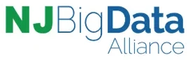
SceneTwin: a reference-free audit of audio description for blind and low vision users
A visual grounding and comprehension pipeline that scores whether an audio description actually conveys what a blind or low vision user cannot see, without needing a single human reference script.
What is SceneTwin?An automated quality audit for audio description, the spoken narration blind and low vision users depend on to experience the same feeling as actually watching a video.
Audio description is how blind and low vision users experience video. SceneTwin takes one clip and one candidate description and returns a single audit score plus a flag for whether the score is likely to be reliable. The audit grounds the description against the actual video frames, not against another text, so no reference script is required and AD can be checked at the scale BLV users actually consume video.
Two reference free signals run in parallel. CLIP visual grounding measures cosine similarity between sampled frames and the description text and catches hallucinated or wrong scene descriptions. Frame grounded ADQA has a vision language model write comprehension questions from the frames, then a separate language model grades the description blind, catching vague or under specified text. The two signals are averaged with fixed equal weights.
A separate TRIBE fMRI encoder runs alongside the main pipeline and forecasts which clips are likely to be hard for the automated scorer, allowing a small fraction of clips to be flagged for human review with full recall on known scorer failures.
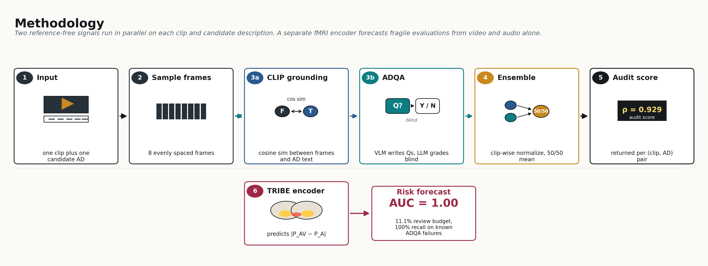
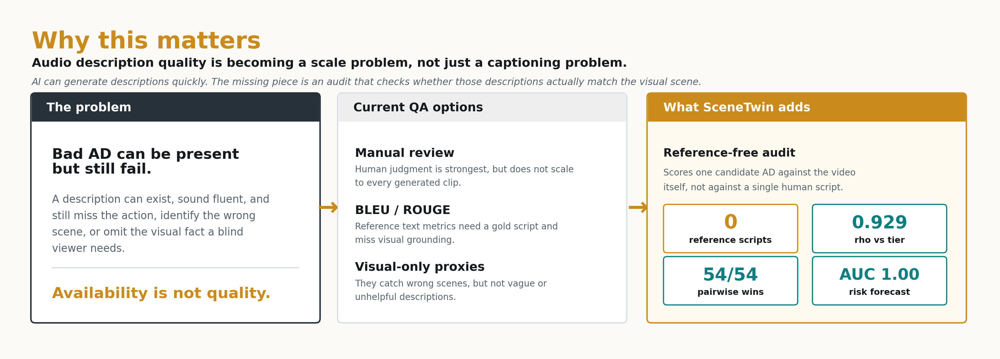
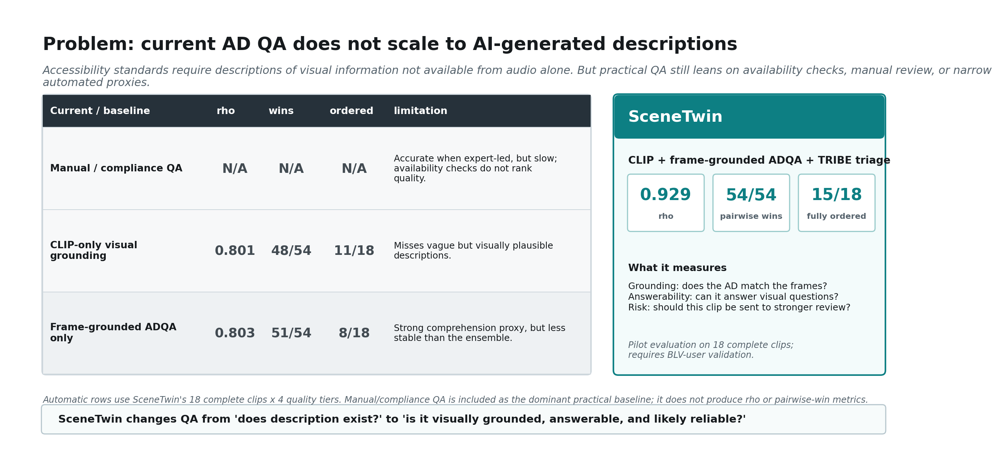
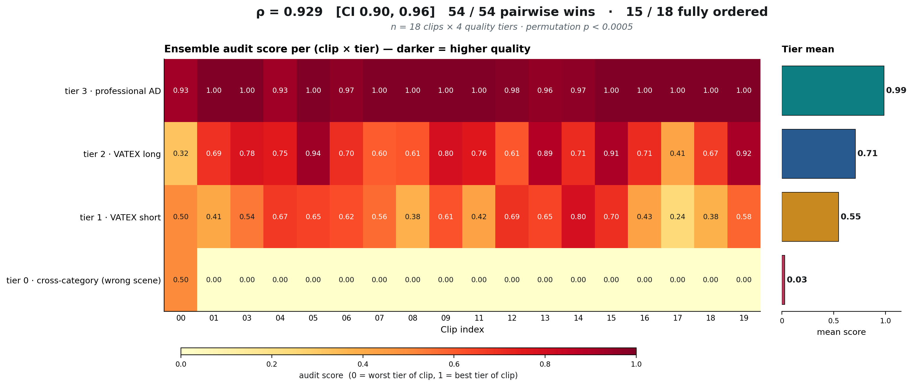
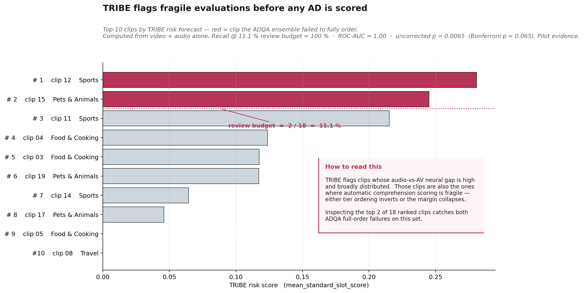
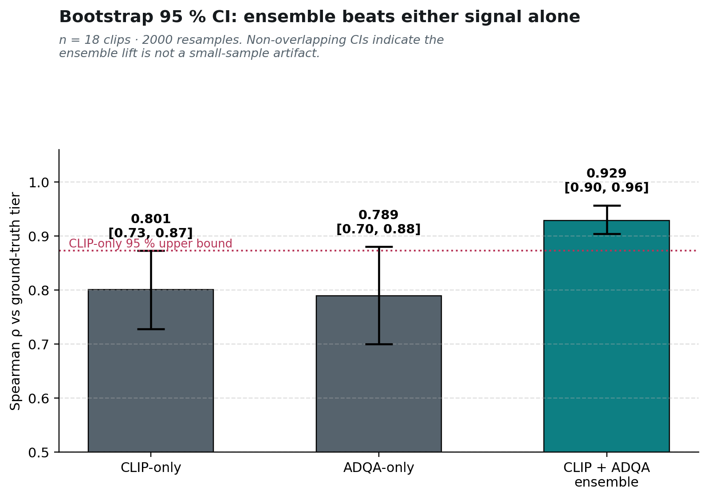
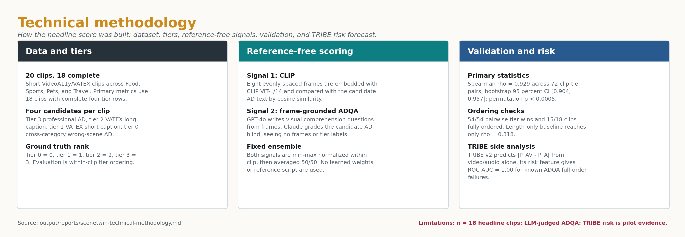
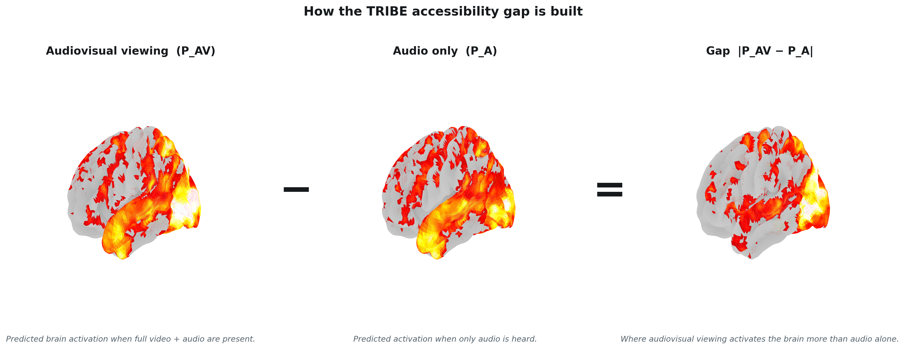
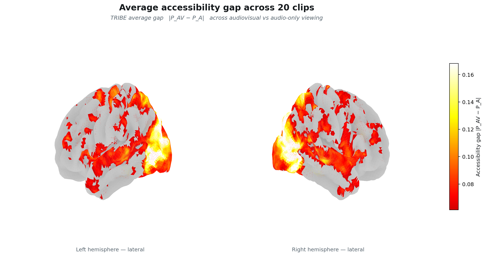
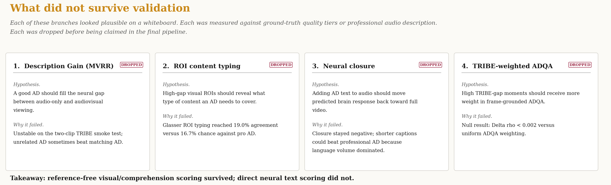
- Radford, A., et al. (2021). Learning Transferable Visual Models From Natural Language Supervision. ICML.
- d'Ascoli, S., et al. (2026). A foundation model of vision, audition, and language for in-silico neuroscience. arXiv:2605.04326.
- Li, C., et al. (2025). VideoA11y: Method and Dataset for Accessible Video Description. arXiv:2502.20480.
- Wang, X., et al. (2019). VATEX: A Large-Scale, High-Quality Multilingual Dataset for Video-and-Language Research. ICCV.

Supported by NSF Grant #2028011. Thank you to Dr. Nan Wang, Bohan Fan, and Xiaoshan Wang for their guidance, and to the Department of Computer Science and the College of Science and Health at William Paterson University for their support.